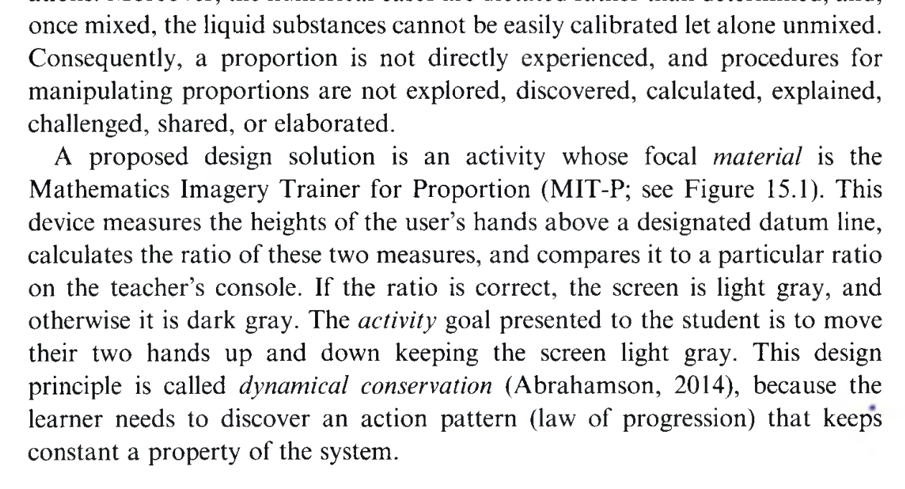
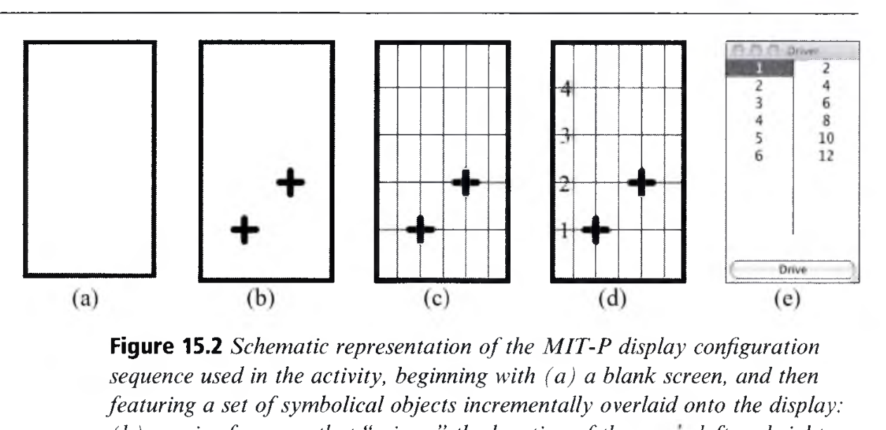
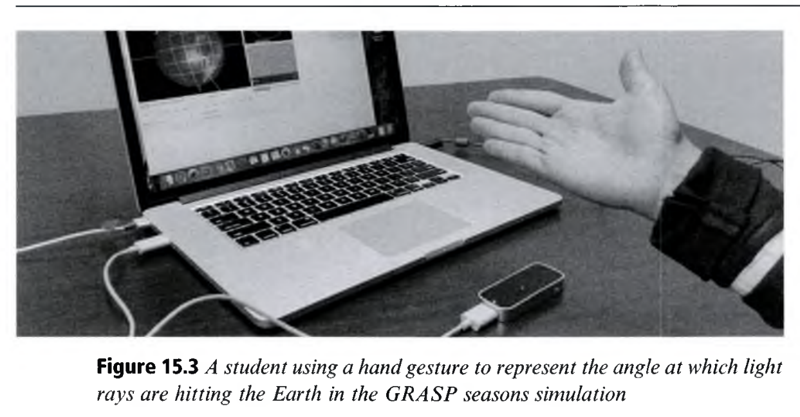
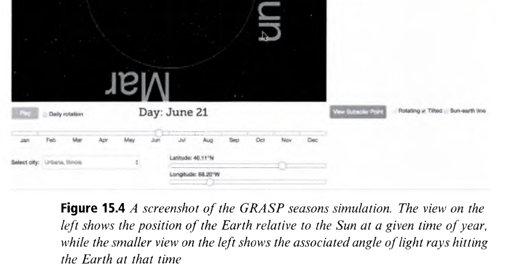

Embodiment and Embodied Design
체화 인지와 체화 설계: 몸으로 배우는 수학·과학, 그리고 상호작용 인터페이스의 설계
👥 저자 및 출처
Dor Abrahamson (UC Berkeley) & Robb Lindgren (UIUC)
『The Cambridge Handbook of the Learning Sciences』 (3rd Ed., 2022, pp. 302–323)
🎯 챕터 핵심 아젠다
- "Learning is Moving in New Ways": 데카르트 이원론 극복
- 체화 설계의 3대 축: 과제(Activities), 재료(Materials), 교수 촉진(Facilitation)
- 수학 심상 훈련기 (MIT-P, Fig 15.1 & 15.2): 손 높이 비례 조작
- GRASP 프로젝트 (Fig 15.3 & 15.4): 전신 과학 시뮬레이션 & 유령 손
🎯 강의 목표 및 핵심 맥락 (Context & Goal)
본 장은 추상적 수학·과학 개념이 어떻게 신체의 감각운동 스키마와 제스처로부터 발현되는지를 밝히고, 이를 지원하는 상호작용 테크놀로지 설계 원리를 제시합니다.
📖 원문 심층 학술 해설 (Detailed Academic Commentary)
도르 아브라함슨 교수와 롭 린드그렌 교수는 인지과학의 '체화 인지(Embodied Cognition)' 이론을 교육공학 및 인터페이스 설계로 발전시킨 대표적 학자들입니다.
💡 수업/세미나 진행 팁 & 질문 가이드
"우리가 '분수'나 '미적분'을 생각할 때, 뇌 속에서 숫자가 돌아갈까요 아니면 과거에 손으로 무언가를 쪼개고 움직였던 감각이 돌아갈까요?"라는 질문으로 시작하세요.
체화 인지의 3대 이론적 원리
두뇌 속 기호 조작이 아닌, 신체와 환경의 감각운동 상호작용 (Varela et al., 1991)
1. 두 지각의 조율
Rhyme & Reason
감각운동적 신체 직관(Rhyme)과 문화적 기호 표상(Reason)의 상호 협응
2. 시뮬레이션 지각
Motor Simulation
수식이나 대상만 보아도 뇌는 과거 신체 움직임을 운동학적으로 내적 시뮬레이션
3. 도구와 단절
Equipment & Breakdowns
신체 움직임이 막히는 순간(Breakdown), 기호와 도구가 의미 있는 매개체로 등장
🎯 강의 목표 및 핵심 맥락
체화 인지 이론의 3대 핵심 원리(Rhyme & Reason, Motor Simulation, Breakdowns)를 체계적으로 설명합니다.
📖 원문 심층 학술 해설
하이데거의 도구 이론: 망치가 손에 익을 때는 망치를 의식하지 않지만(Ready-to-hand), 망치가 부러지는 순간(Breakdown) 비로소 '망치의 구조'를 반성하게 됩니다. 학습 설계도 이 '신체적 단절'을 정밀하게 설계해야 합니다.
💡 수업/세미나 진행 팁 & 질문 가이드
기호 표상 이전에 신체적 직관이 왜 선행해야 하는지 학생들에게 질문하세요.
체화 설계를 위한 3대 설계 축 (Embodied Design)
기호 없는 신체 문제해결에서 점진적 기호 매개로의 발전 (Abrahamson, 2014)
1. 과제 설계 (Activities)
숫자나 기호 없이, 오직 손이나 몸의 움직임만으로 목표 상태(초록색 화면)를 달성하는 감각운동 과제
2. 재료 설계 (Materials)
모눈 격자, 눈금선, 숫자를 단계별로 덧씌워 신체 감각을 수학 기호로 번역 (Scaffolded Layering)
3. 교수 촉진 (Facilitation)
정답 공식을 주지 않고 제스처 큐잉(Physical Cueing)과 발문으로 신체 속 수학 원리 발견 유도
🎯 강의 목표 및 핵심 맥락
체화 설계(Embodied Design)의 3가지 구성 요소(과제, 재료, 교수 촉진)의 상호작용을 설명합니다.
📖 원문 심층 학술 해설
가장 핵심적인 원리는 '기호 없는 순수 조작'에서 시작하여, 신체 움직임을 최적화하기 위해 '기호를 도구로 도입'하는 점진적 궤적입니다.
💡 수업/세미나 진행 팁 & 질문 가이드
다음 슬라이드에서 실제 MIT-P 시스템의 도판과 함께 이 3대 축이 어떻게 구현되었는지 살펴봅니다.
수학 심상 훈련기: MIT-P 시스템 (Figure 15.1)
두 손의 높이 비율($1:2$)을 유지해야만 화면이 초록색으로 변하는 상호작용 시스템

🔍 클릭하여 300 DPI 원서 도판 확대🎮 MIT-P 인터랙션 규칙
- 학생은 양손에 센서를 잡고 화면 앞에서 손을 위아래로 움직임
- 시스템이 설정한 비례($1:2$)에 맞으면 초록색(Green), 어긋나면 빨간색(Red) 피드백
- 학생은 "오른손이 왼손보다 2배 높이 있어야 한다"는 신체 감각을 먼저 발견
🎯 강의 목표 및 핵심 맥락
원서 Figure 15.1의 MIT-P(Mathematics Imagery Trainer for Proportion) 시스템 구조와 기본 인터랙션을 설명합니다.
📖 원문 심층 학술 해설
초기에는 아무런 숫자도 보이지 않습니다. 학생은 오직 신체적 균형 감각(Sensorimotor scheme)을 통해 화면을 초록색으로 유지하는 '동적 보존(Dynamical Conservation)'을 체득합니다.
💡 수업/세미나 진행 팁 & 질문 가이드
도판을 클릭하여 확대하고, 학생의 손 위치와 화면 색상 피드백을 확인하세요.
MIT-P 4단계 점진적 인터페이스 시퀀스 (Figure 15.2)
완전 빈 화면 (a) ➔ 격자선 (b) ➔ 눈금선 (c) ➔ 숫자 (d)로 이어지는 기호화의 사다리

🔍 클릭하여 300 DPI 원서 도판 확대📈 4단계 인지적 도약
- (a) Blank: 순수 신체 탐색
- (b) Grid: "왼손 1칸 갈 때 오른손 2칸" 격자 활용
- (c) Ticks: 높이 위치의 절대적 정량화
- (d) Numerals: "$\frac{1}{2} = \frac{2}{4}$가 내 손동작이었구나!"
🎯 강의 목표 및 핵심 맥락
원서 Figure 15.2의 (a)부터 (d)까지 점진적 기호 매개(Scaffolded Layering) 과정을 상세히 분석합니다.
📖 원문 심층 학술 해설
학생들은 처음에 덧셈적 사고("오른손이 왼손보다 5cm 위에 있다")의 오류에 빠지지만, 손을 높이 올릴수록 간격이 2배로 벌어져야 함을 격자와 숫자를 통해 깨달으며 '곱셈적 비례 사고'로 도약합니다.
💡 수업/세미나 진행 팁 & 질문 가이드
수학 교육에서 왜 공식 주입보다 이러한 점진적 시각·신체적 매개가 우수한지 토론하세요.
GRASP 전신 과학 시뮬레이션 & 유령 손 (Ghost Hands)
지구 자전축과 태양 입사각을 온몸으로 시뮬레이션하는 키넥트 모션 캡처 환경

🔍 Figure 15.3 확대
🔍 Figure 15.4 확대🎯 강의 목표 및 핵심 맥락
원서 Figure 15.3(신체 제스처 시연)과 Figure 15.4(GRASP 계절 시뮬레이션 및 유령 손 큐잉)를 분석합니다.
📖 원문 심층 학술 해설
'유령 손(Ghost Hands)'은 학생이 화면 속 시뮬레이션과 상호작용할 때, 이상적인 제스처 궤적을 반투명 그래픽으로 띄워 신체적 비계를 제공하는 획기적인 교수학습 도구입니다.
💡 수업/세미나 진행 팁 & 질문 가이드
학생들이 온몸을 움직여 계절 변화 원리를 배울 때 기억 유지도(Retention)가 왜 급상승하는지 짚어보세요.
체화 인지와 피지컬 컴퓨팅 / 로봇 코딩 교육
화면 속 코드를 넘어: 신체 제스처와 로봇의 물리적 움직임을 통한 알고리즘 체화
🤖 피지컬 컴퓨팅 & 로봇 코딩
- 마이크로비트(Micro:bit), 아두이노 가속도 센서를 신체에 부착하고 제스처로 알고리즘 제어
- 로봇이 미로를 주행하는 물리적 궤적을 학생이 직접 걸어보며(Body-syntonic) 디버깅
🧩 바디 신토닉(Body-Syntonic) 프로그래밍
- 파퍼트(Papert)의 로고 터틀: "내가 거북이라면 오른쪽으로 $90^\circ$ 회전하려면 어떻게 몸을 틀어야 할까?"
- 신체의 회전 감각이 각도 및 반복문 코딩 개념의 근원적 기반이 됨
🎯 강의 목표 및 핵심 맥락
체화 설계 원리를 정보 교육의 피지컬 컴퓨팅 및 파퍼트의 바디 신토닉(Body-syntonic) 코딩 학습에 접목합니다.
📖 원문 심층 학술 해설
알고리즘의 '반복(Loop)'이나 '조건 분기(If-else)'는 추상적 텍스트가 아니라, 로봇과 신체의 공간적 움직임을 통해 가장 직관적으로 체화됩니다.
💡 수업/세미나 진행 팁 & 질문 가이드
아이들이 코딩할 때 손짓과 몸짓을 쓰는 모습을 관찰해 본 경험을 공유하세요.
Chapter 15 결론 및 Chapter 16 탠저블 인터페이스 예고
학습은 새로운 방식으로 움직이는 것이다! (Learning is Moving in New Ways)
🌟 Ch 15 체화 설계의 3대 교훈
- 1. 기호 이전에 신체의 감각운동 스키마를 먼저 형성하라
- 2. 점진적 기호 덧씌우기(Scaffolded Layering)로 수학·과학을 번역하라
- 3. 유령 손(Ghost Hands)과 제스처로 과학적 메커니즘을 큐잉하라
🚀 Chapter 16 예고: 탠저블 및 전신 인터페이스
Narcis Parés & Michael Eisenberg
물리적 만질 수 있는 교구(Tangible)와 대규모 전신 인터랙션 공간이 여는 학습과학의 새로운 지평!
🎯 강의 목표 및 핵심 맥락
Chapter 15의 핵심 통찰을 정리하고, 이어지는 Chapter 16(Tangible and Full-Body Interfaces in Learning)을 예고합니다.
📖 원문 심층 학술 해설
Chapter 16은 본 장의 체화 인지 이론을 더욱 구체적인 하드웨어 탠저블 도구 및 전신 인터페이스 환경으로 확장합니다.
💡 수업/세미나 진행 팁 & 질문 가이드
Chapter 15를 마치며 참석자들과 질의응답을 진행하세요.